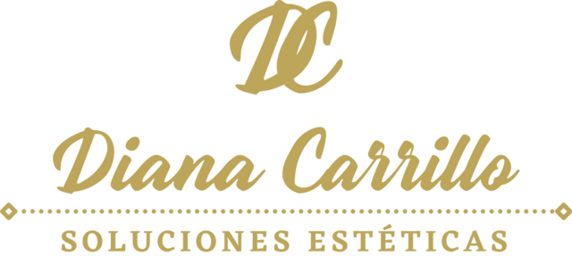
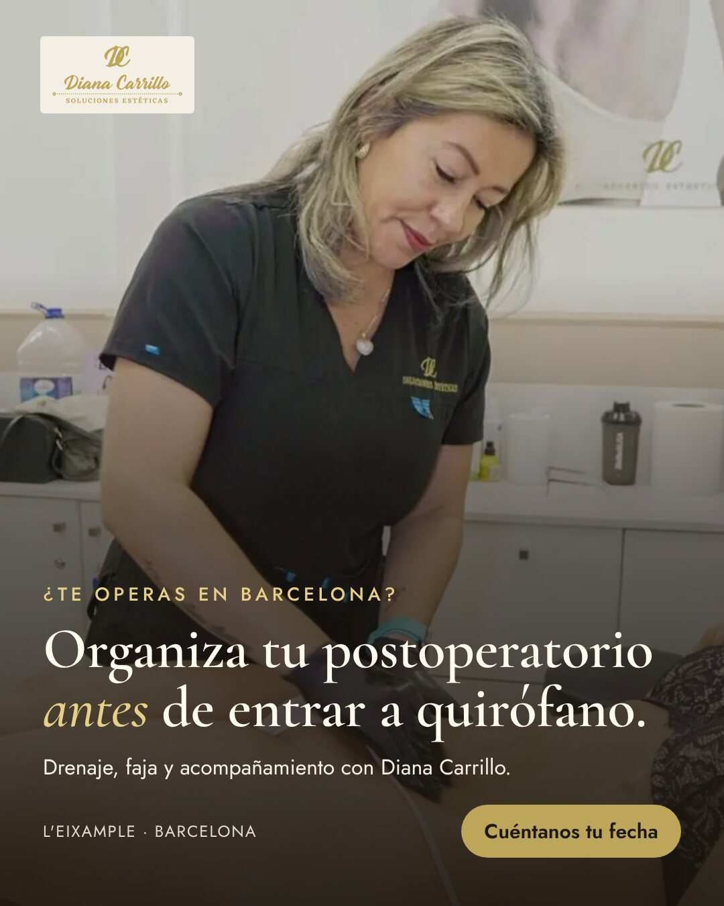
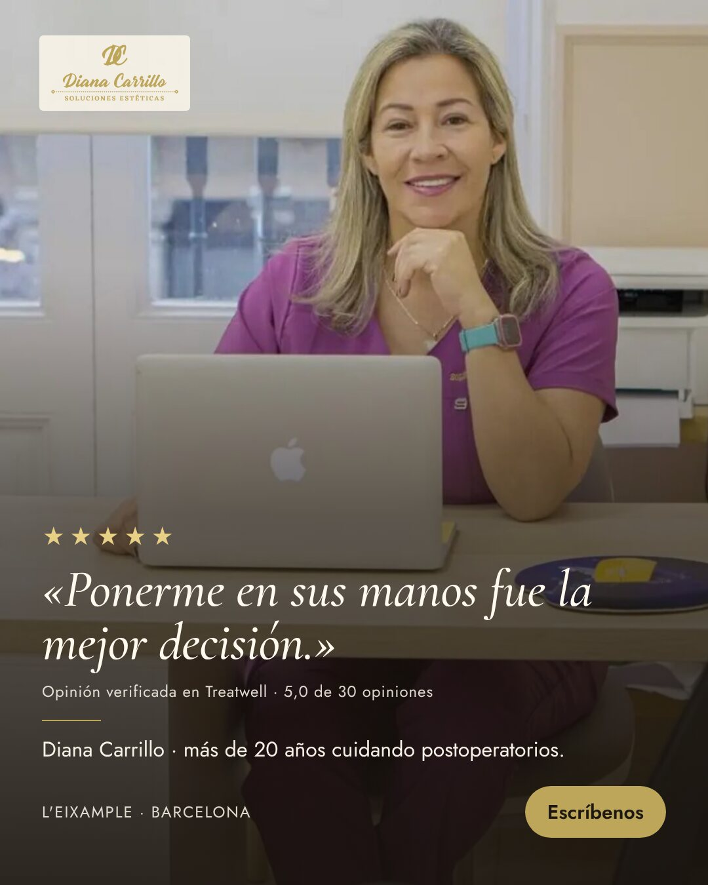
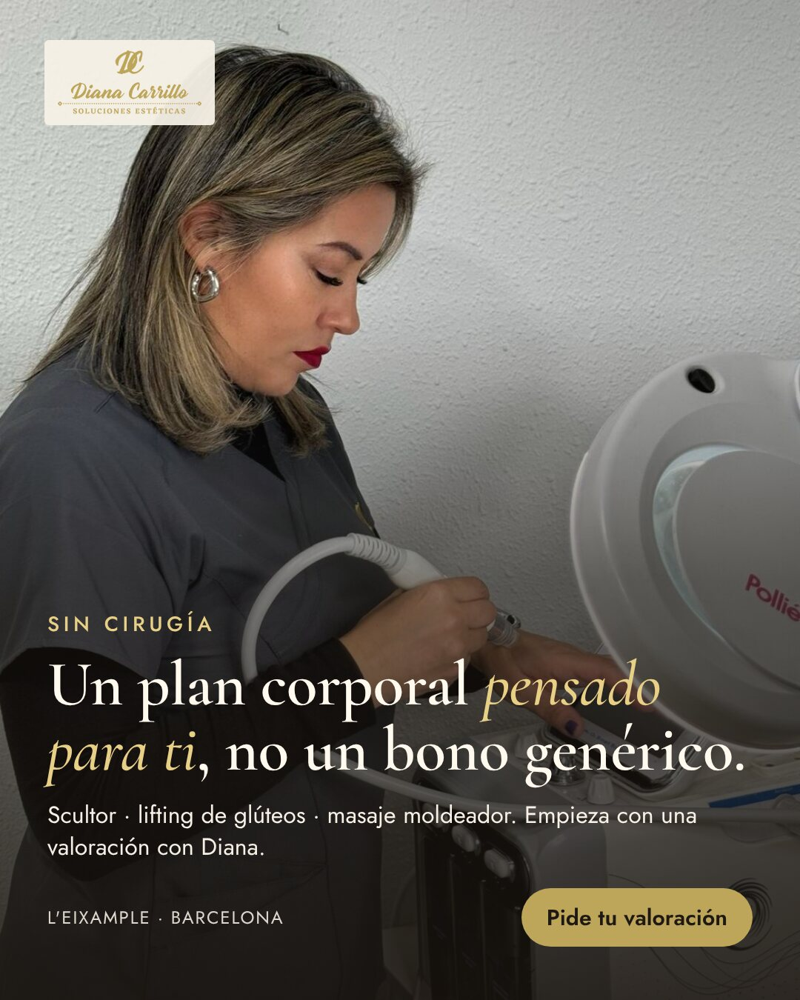

QUALIVO · PLAN PARA DIANA CARRILLO ADVANCED ESTHETICSUn plan para contestar cada consulta en el primer minuto, llevarla a una valoración contigo y acompañar cada presupuesto hasta que la paciente decide. Con anuncios que traen pacientes de postoperatorio y de estética corporal, y un panel para ver qué funciona. Lo afinamos con tus números en la reunión.
Inversión
Entre 500 y 2.000 € al mes en captación.
Volumen
Entre 20 y 50 solicitudes al mes.
Lo que se escapa
«El seguimiento y los presupuestos»: la paciente pide información, se lo piensa y nadie retoma la conversación.
Mi hipótesis, para confirmar contigo: con 20-50 solicitudes al mes no te falta gente, te falta tiempo para volver a escribir a cada una. Mientras estás en cabina haciendo un drenaje, la paciente que preguntó ayer por un bono no recibe nada, y en postoperatorio eso pesa el doble: tiene una fecha de cirugía y acaba con quien le contesta antes. Lo primero es que cada consulta y cada presupuesto tengan dueño y fecha para el siguiente mensaje.
Revisado el 16 de octubre de 2026 en dianacarrillo.es, en tu ficha de Treatwell y en búsquedas de Google. Lo que no he podido comprobar está marcado.
«Me realice mi postoperatorio con Diana, ponerme en sus manos fue la mejor decisión. […] me sentí acompañada y en las mejores manos en todo momento.»Opinión verificada y pública en tu ficha de Treatwell (tratamiento de drenaje linfático). La usamos tal cual, sin nombre, en anuncios y landing si te parece bien.
Tus anuncios
Desde aquí no he podido abrir la Biblioteca de anuncios de Meta (pide inicio de sesión), así que no sé si tienes anuncios activos ahora. Lo miramos juntos en la reunión: qué campañas tienes, a dónde llevan (¿al WhatsApp, a la web?) y qué se ha gastado este mes.
Precios
En la web no hay precios de tratamientos (bien, en salud es lo prudente). Sí los hay de fajas M&D: de 22 € (almohadilla de espalda) a 149 € (faja con brasier). Para el agente necesitamos tus precios orientativos de bonos.
| Competencia en Barcelona | Qué hacen | Qué significa para ti |
|---|---|---|
| Barcelona Plastic Surgery | Clínica de cirugía con equipo propio de drenaje linfático: la paciente sale de quirófano con el postoperatorio ya resuelto dentro. | Las clínicas grandes se quedan el postoperatorio. Tu ventaja es la relación con cirujanos que no lo tienen y el trato cercano: hay que decirlo. |
| FisioClinics Barcelona | Drenaje post-liposucción con fisioterapeutas, sesiones de 60 minutos, cita por teléfono o formulario. Sin precios. | Compiten por «drenaje post lipo Barcelona» en Google. Tu diferencia: técnica colombiana, fajas y acompañamiento antes de la cirugía. |
| Francia's Secret (Sant Martí) y centros en Booksy | Venden el drenaje post-lipo como un producto suelto (media hora). En Booksy hay drenajes postoperatorios a 29-40 € la sesión en el área metropolitana. | Quien compara por precio siempre encontrará algo más barato. Por eso el mensaje es confianza y plan completo, y el seguimiento resuelve dudas en vez de bajar precio. |
«Prepara tu postoperatorio antes de operarte», «20 años y una opinión real» y «tu plan corporal sin cirugía». Cada uno con su público. Ver los 6 anuncios.
Tu historia, cómo trabajas, tus opiniones reales y un test de tres preguntas: qué buscas, cuándo es tu cirugía y si vienes de fuera. Ver la maqueta.
Sofía, la asistente, escribe al momento, también por la noche y en fin de semana: pregunta la fecha de la cirugía o lo que busca, explica cómo trabajas y propone una valoración contigo.
Si a los 10-20 minutos no ha respondido al WhatsApp, Raquel (asistente de voz) la llama. Solo a quien dejó sus datos y pidió información, y solo de 8:00 a 21:30.
Confirmación al reservar, recordatorio la víspera y 2 horas antes. Si no viene, se le propone otro hueco ese mismo día.
El corazón del plan. Quien pidió precio y no reservó, y quien vino a la valoración y se llevó un presupuesto, recibe mensajes con fecha (día 1, 3, 7, 14 y 30) con la duda típica de cada momento. Si es postoperatorio, el calendario se ajusta a su fecha de cirugía. Cuando responde, se para todo y te avisa.
Recordatorio de cada sesión, aviso a mitad del bono, petición de reseña al terminar y un mensaje a los 60 días para quien quiera seguir con tratamiento corporal.



| Campaña | Dónde | Para qué |
|---|---|---|
| A · Postoperatorio | Meta (feed, historias y reels) | Mujeres que se van a operar en Barcelona. Lleva al test de la landing: nos dice la fecha de la cirugía. |
| B · Confianza | Meta, directo a WhatsApp | Tu cara y una opinión real. Para quien ya te conoce o te ha visto en Instagram. |
| C · Corporal sin cirugía | Meta | Scultor, lifting de glúteos, masaje moldeador. Puerta de entrada que llena huecos de agenda. |
| Búsqueda (mes 2) | «drenaje postoperatorio Barcelona», «drenaje post lipo»: gente que ya lo está buscando. |
Publicidad sanitaria. Sin promesas de resultados, sin antes y después, sin fotos de cicatrices y sin ofertas agresivas. Carboxiterapia y mesoterapia corporal se consideran actos médicos: antes de anunciarlas hay que confirmar quién las realiza. Todo anuncio y toda página los validas tú antes de salir.
Presupuestos abiertos, ordenados por probabilidad y por fecha de cirugía, con el siguiente paso de cada uno.
Euros en presupuestos sin aceptar, y cuántos llevan más de dos días sin que nadie escriba.
Consultas, valoraciones, bonos vendidos y coste por valoración de cada campaña.
Y una revisión de 30 minutos cada semana conmigo para decidir qué cambiar. Así se ve: panel de ejemplo con tu nombre (datos de ejemplo de una clínica; con los tuyos aparecerían drenajes, bonos y fajas).
| Qué | Hoy | Con el sistema |
|---|---|---|
| Tiempo de respuesta | Cuando puedes, entre sesión y sesión | Menos de 1 minuto, de 8:00 a 21:30, todos los días |
| Presupuestos con siguiente mensaje fijado | No se sabe | Todos, con fecha |
| Consultas que llegan a valoración | No se sabe | Horquilla a confirmar en las 3 primeras semanas |
| Presupuestos que acaban en bono | No se sabe | Horquilla a confirmar en las 3 primeras semanas |
No prometo un número de pacientes. Lo primero es medir dónde se pierde cada una; con tres semanas de datos ponemos cifras con horquilla.
| Cuándo | Qué |
|---|---|
| Semana 1 | Accesos (Meta, WhatsApp, agenda), textos de Sofía y Raquel aprobados por ti, y lista de presupuestos abiertos que ya tienes. |
| Semana 2 | Landing publicada, WhatsApp en el primer minuto, recordatorios de cita y seguimiento de presupuestos en marcha (también con los que ya tenías abiertos). |
| Semanas 3-4 | Anuncios A, B y C en prueba, llamada de Raquel, panel y primeras decisiones de presupuesto con datos. |
| Mes 2 | Google para «drenaje postoperatorio», mensajes durante el bono, reseñas y reactivación de quien preguntó y no vino. |
Implantación y gestión mensual: anuncios, landing, Sofía (WhatsApp), Raquel (voz), seguimientos, panel y revisión semanal.
[____] € + IVA
implantación
[____] € + IVA / mes
gestión mensual · la inversión en anuncios va aparte y la pagas tú directamente a Meta
Lo construyo, os formo y queda en casa. Tú o tu equipo lo lleváis desde el primer mes.
[____] € + IVA
pago único
[____] € + IVA / mes
herramientas (WhatsApp, voz y panel)
Te recomiendo una de las dos cuando veamos tus números en la reunión.